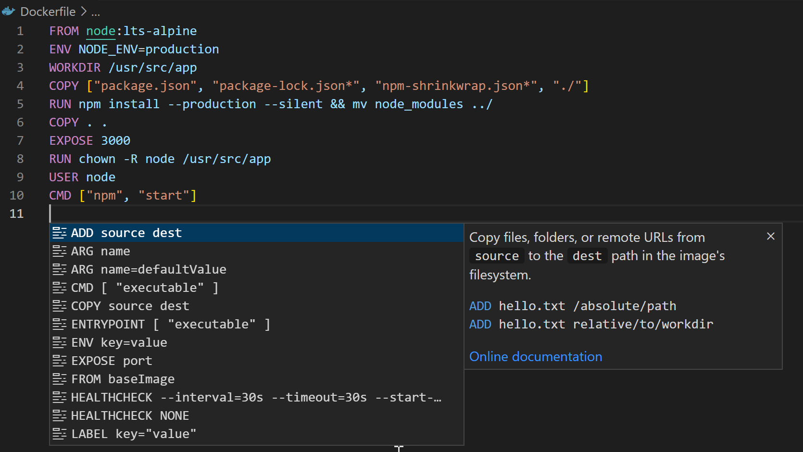
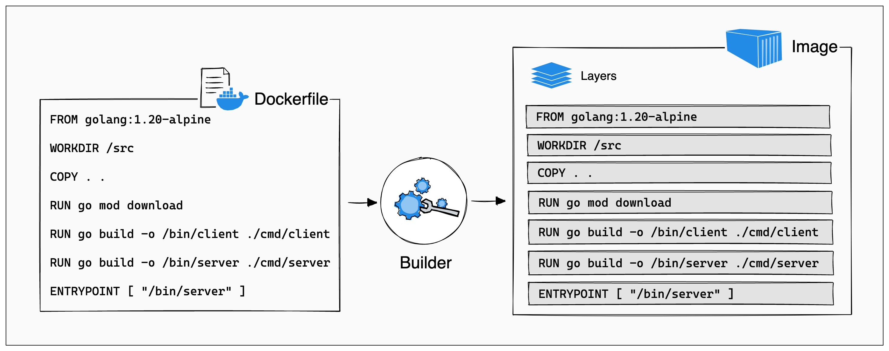

14. Container Command Breakdowns#
Now that we’ve seen some dockerfiles, and how/why they’re used, let’s go over how to make a container file. We will cover some basic container file commands and their syntax. These commands are run inside container file to help create your container image:
FROM: Specifies the base image to start building the container image, think of this like using a baking mix instead of starting from scratch:FROM base-imageRUN: Executes commands in the container at build time, like installing packages or shell commands. You can think of it as running commands inside your container as it’s being built:RUN commandCOPY: Copies files or directories from the host system into the container. It can move your local files into the container:COPY source destination

Image Source: https://code.visualstudio.com/docs/containers/overview
ADD: Similar toCOPY, but also supports extracting compressed files and fetching files from URLs:ADD source destinationWORKDIR: Sets the working directory for subsequent instructions. So, if you use the un command, it will be running in the working directory you have set:WORKDIR pathCMD: Specifies the default command to run when a container starts, but know that it can be overridden. If there are multiple CMD lines in a Dockerfile, it will only execute the last CMD command:CMD ["executable", "param1", "param2"]ENTRYPOINT: Configures a container to run as an executable, with arguments passed toCMD. This command is different from CMD because it can’t be overridden:ENTRYPOINT ["executable", "param1"]
Let’s take a short break from commands to look at the difference between CMD and ENTRYPOINT. CMD commands are ignored by the background process, or dameon, that creates the container when there are parameters stated within the docker/podman run command. ENTRYPOINT instructions are not ignored, but instead, are appended as command-line parameters by treating those as arguments of the command.
ENV: Sets environment variables in the container. We talked about environment variables in our .gitignore chapter, if you need a refresher of how environment variables are used!ENV key=valueEXPOSE: Tells docker/podman that the container will listen on the specified network ports at runtime.EXPOSE portVOLUME: Creates a mount point for external storage or data persistence. A volume mount in a container file is a way to attach a directory or file from your host system to a directory inside the container. This allows data to persist between container runs or share data between containers. For example, using the VOLUME command in a container file creates a mount point that can be used to store and access data outside the container’s filesystem.VOLUME "/path/in/container"
For an application that needs to store data persistently, you might define a volume:
#using mysql for base image
FROM mysql:8.0
#environment variables
ENV MYSQL_ROOT_PASSWORD=password
ENV MYSQL_DATABASE=database
#exposing the default MySQL port
EXPOSE 3306
# here we set a volume for the MySQL data
VOLUME ["/var/lib/mysql"]
USER: Specifies the user under which the container runs.USER [username | UID:GID]LABEL: Adds metadata to the image, such as version or maintainer information.LABEL key=value
FROM ubuntu:21.01
#using labels to create metadata about the image
LABEL maintainer="youremailname@gmail.com"
LABEL version="1.56789"
LABEL description="Ubuntu image with additional software"
ARG: Sets a variable that you can use during the image build process.ARG key=value
14.1. Layers in Container Images#
Container images are built from different layers, each representing a set of file changes or additions. These layers are stacked on top of each other to create the final image. Docker speeds up the build process by reusing layers that haven’t changed, which helps reduce build time and avoid unnecessary work. Every command in a Dockerfile adds a new layer, making up the image’s structure. This system keeps your builds efficient by minimizing the image size and build time, and it also helps manage layers effectively by sharing them between images to save space and avoid duplication. Knowing how Docker’s layers work is key to optimizing your image builds and managing them better.

Image Source: https://docs.docker.com/build/guide/layers/
14.2. Conclusion#
These are not all the commands you can use in a container file, but an overview. A great place to start with containers is to take an existing project you’ve made, and try to containerize them- you don’t have to start from scratch! Try playing around with your own projects.
If you want to get more context’s for different commands, check out these sites for documentation: https://docs.podman.io/en/latest/Commands.html https://docs.docker.com/reference/cli/docker/
Happy containerizing!